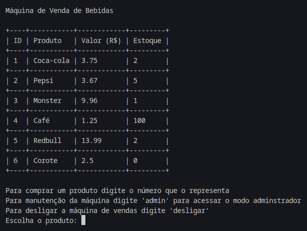

Projeto: Raciocínio Algorítmico - Máquina de Vendas de Bebidas
Descrição:
Este projeto é uma máquina de vendas de bebidas desenvolvida em Python como parte da disciplina Raciocínio Algorítmico. O sistema permite comprar produtos com pagamento exato ou acima do valor, retornando o troco correto. Inclui um modo administrador para cadastro, edição e remoção de produtos, além de visualização e reabastecimento do caixa de troco da máquina. Foram utilizadas funções, estruturas de desvio, listas e a biblioteca tabulate para formatação de tabelas.
Características principais:
- Compra de produtos com pagamento exato
- Retorno de troco para pagamentos acima do valor
- Modo administrador para gerenciamento de produtos
- Visualização e reabastecimento do caixa de troco
- Formatação de tabelas com a biblioteca tabulate
Desafios enfrentados:
- Implementação do retorno de troco correto
- Desenvolvimento do modo administrador com diversas funcionalidades
Ferramentas utilizadas:
- Python
- Biblioteca tabulate